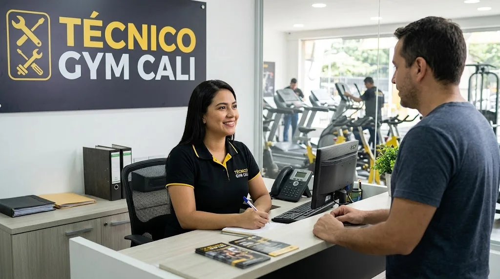
Técnicos en Cali
Reparación de caminadoras y equipos de gimnasio en Cali
Caminadoras, bicicletas de spinning, elípticas y máquinas multifuncionales. Cuéntanos qué falla por WhatsApp y te orientamos.
- Servicio a domicilio en Cali
- Casa, gimnasios y condominios
- Te explicamos la falla antes de reparar
Servicios de reparación y mantenimiento
Reparamos todo lo que tenga que ver con equipos de gimnasio en Cali.
 Reparación de caminadoras en CaliSi tu caminadora no enciende, la banda patina, hace ruido o se apaga sola, la revisamos y la dejamos funcionando. Atende…Ver servicio →
Reparación de caminadoras en CaliSi tu caminadora no enciende, la banda patina, hace ruido o se apaga sola, la revisamos y la dejamos funcionando. Atende…Ver servicio →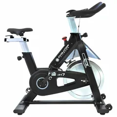
Reparación de bicicletas de spinning y estáticas en CaliPedales flojos, ruidos al pedalear, resistencia que no frena o un monitor que no marca: revisamos tu bicicleta de spinni…Ver servicio →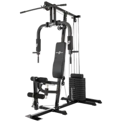
Reparación de máquinas multifuncionales y multigimnasios en CaliCables desgastados, poleas que rechinan, pila de pesas que se traba o tapicería rota: reparamos tu máquina multifunciona…Ver servicio →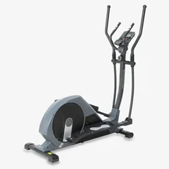
Reparación de elípticas en CaliSi tu elíptica cruje, se siente floja o la resistencia no responde, la revisamos y la ajustamos o reparamos.…Ver servicio →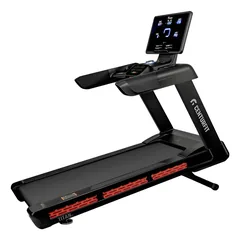
Mantenimiento de equipos de gimnasio en CaliSi tienes un gimnasio, un condominio o una empresa con zona de ejercicio, el mantenimiento a tiempo evita que una máquin…Ver servicio → Reparación de equipos de gimnasio a domicilio en CaliNo tienes que desmontar ni mover tu equipo. Vamos a tu casa, oficina o gimnasio en Cali, revisamos la falla y te explica…Ver servicio →Servicio técnico de caminadoras en CaliUn servicio técnico completo para tu caminadora: desde el diagnóstico hasta la prueba final, en tu casa o en tu gimnasio…Ver servicio →Cambio de banda de caminadora en CaliSi la banda de tu caminadora está desgastada, deshilachada o patina, la cambiamos y revisamos las piezas que la rodean.…Ver servicio →Reparación de motor de caminadora en CaliSi el motor de tu caminadora no gira, suena forzado o se calienta, lo diagnosticamos y te decimos si se repara o se reem…Ver servicio →Reparación de tarjeta controladora de caminadora en CaliLa tarjeta controladora es el cerebro de la caminadora. Si falla, el equipo puede no encender, no acelerar o mostrar err…Ver servicio →Reparación de consola de caminadora en CaliPantalla apagada, botones que no responden o datos que no aparecen: revisamos la consola y su cableado.…Ver servicio →Calibración de inclinación de caminadora en CaliCuando la inclinación pierde la referencia o no responde, hay que calibrarla o revisar el motor que la mueve.…Ver servicio →Mantenimiento preventivo de caminadoras en CaliUn mantenimiento a tiempo evita la mayoría de las fallas y alarga la vida del motor y de la banda.…Ver servicio →
Reparación de equipos de gimnasio a domicilio en CaliNo tienes que desmontar ni mover tu equipo. Vamos a tu casa, oficina o gimnasio en Cali, revisamos la falla y te explica…Ver servicio →Servicio técnico de caminadoras en CaliUn servicio técnico completo para tu caminadora: desde el diagnóstico hasta la prueba final, en tu casa o en tu gimnasio…Ver servicio →Cambio de banda de caminadora en CaliSi la banda de tu caminadora está desgastada, deshilachada o patina, la cambiamos y revisamos las piezas que la rodean.…Ver servicio →Reparación de motor de caminadora en CaliSi el motor de tu caminadora no gira, suena forzado o se calienta, lo diagnosticamos y te decimos si se repara o se reem…Ver servicio →Reparación de tarjeta controladora de caminadora en CaliLa tarjeta controladora es el cerebro de la caminadora. Si falla, el equipo puede no encender, no acelerar o mostrar err…Ver servicio →Reparación de consola de caminadora en CaliPantalla apagada, botones que no responden o datos que no aparecen: revisamos la consola y su cableado.…Ver servicio →Calibración de inclinación de caminadora en CaliCuando la inclinación pierde la referencia o no responde, hay que calibrarla o revisar el motor que la mueve.…Ver servicio →Mantenimiento preventivo de caminadoras en CaliUn mantenimiento a tiempo evita la mayoría de las fallas y alarga la vida del motor y de la banda.…Ver servicio →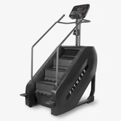
Reparación de escaladora y stepper en CaliSi tu escaladora y stepper presenta fallas como pistones hidráulicos, pedales con juego, crujidos y monitor, la revisamo…Ver servicio →Reparación de banco de pesas en CaliSi tu banco de pesas presenta fallas como ajuste que no encaja, respaldo con juego, tapicería y soportes de barra, la re…Ver servicio →Equipos que atendemos
Caminadoras, bicicletas de spinning, multifuncionales y elípticas, de casa y de gimnasio.

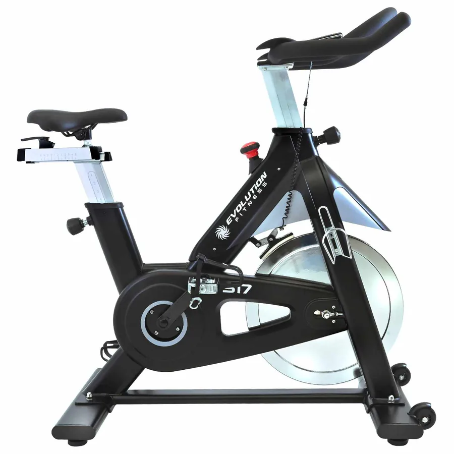
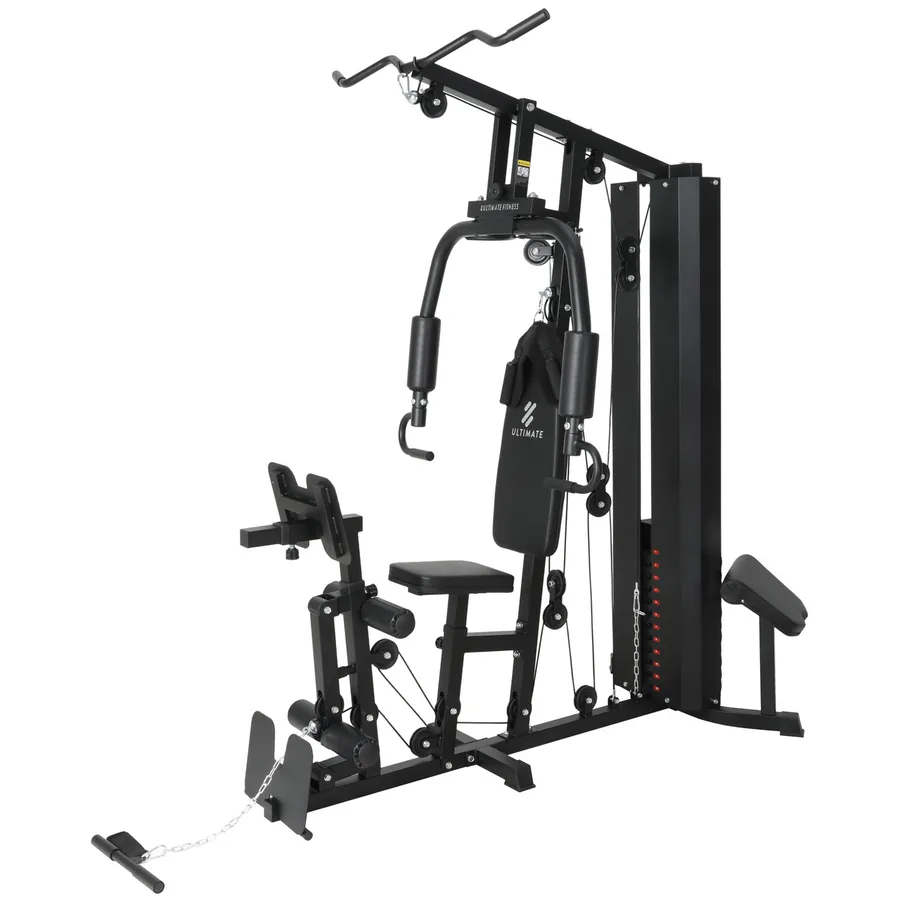
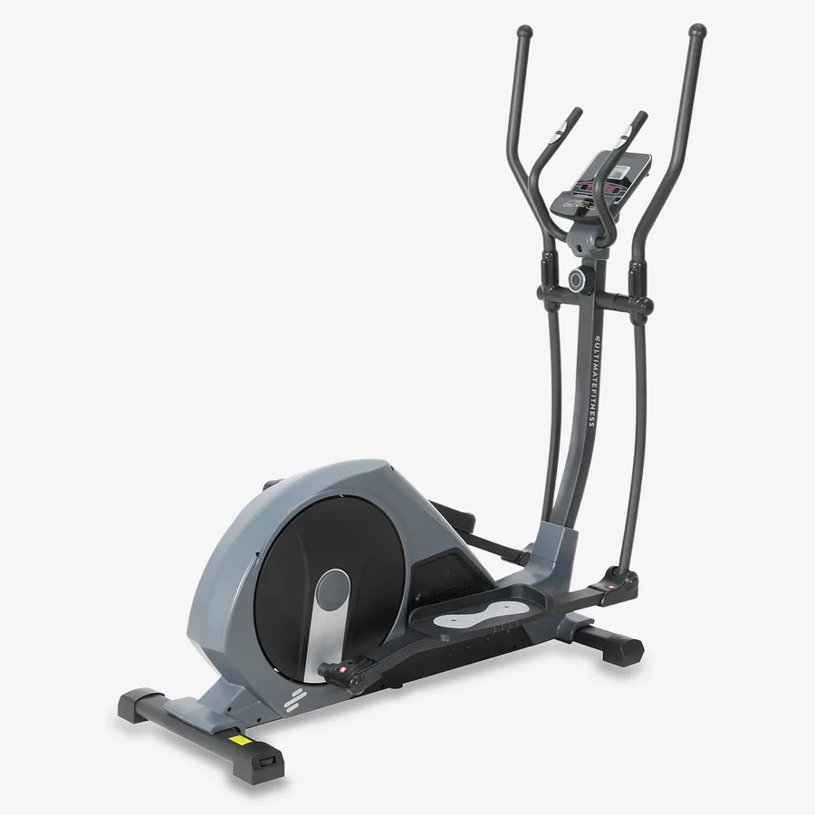
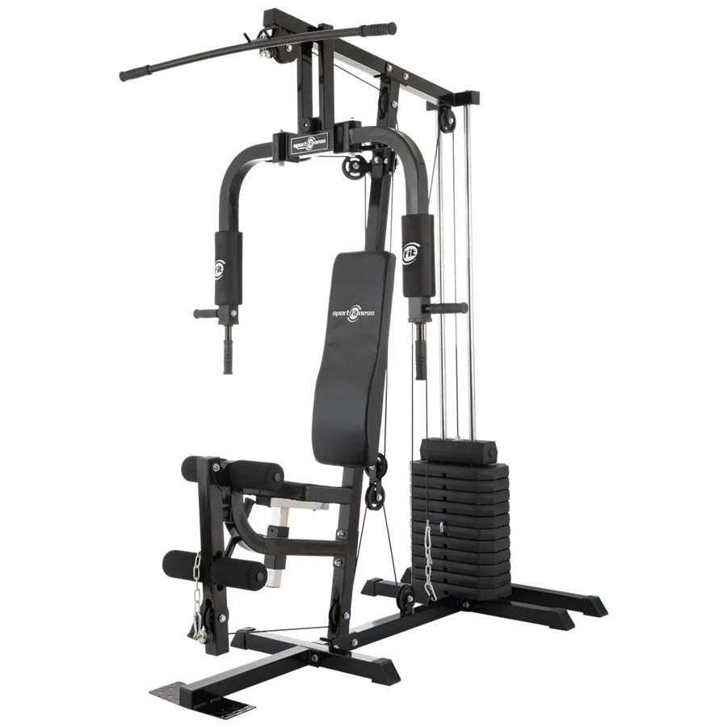
Imágenes de referencia.
Lo que más se busca en Cali
Técnicos de equipos de gimnasio en toda la ciudad, a domicilio.
Todos nuestros servicios
Cada servicio tiene su página con qué incluye y cómo pedirlo.
Marcas que atendemos
Servicio técnico independiente para estas y otras marcas.
Equipos que reparamos
Casi cualquier equipo que uses para hacer ejercicio en casa o en el gimnasio.
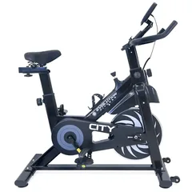
Bicicleta estáticaBicicleta reclinadaBicicletas de spinning y estáticasBicicleta de aire (air bike)ElípticasMáquina de remoEscaladora y stepperMáquinas multifuncionales y multigimnasios¿Qué le pasa a tu equipo?
Estas son las fallas por las que más nos escriben. Cada guía te dice qué revisar antes de llamar.
Así te atendemos
Vamos hasta donde está tu equipo, lo revisamos y lo reparamos.

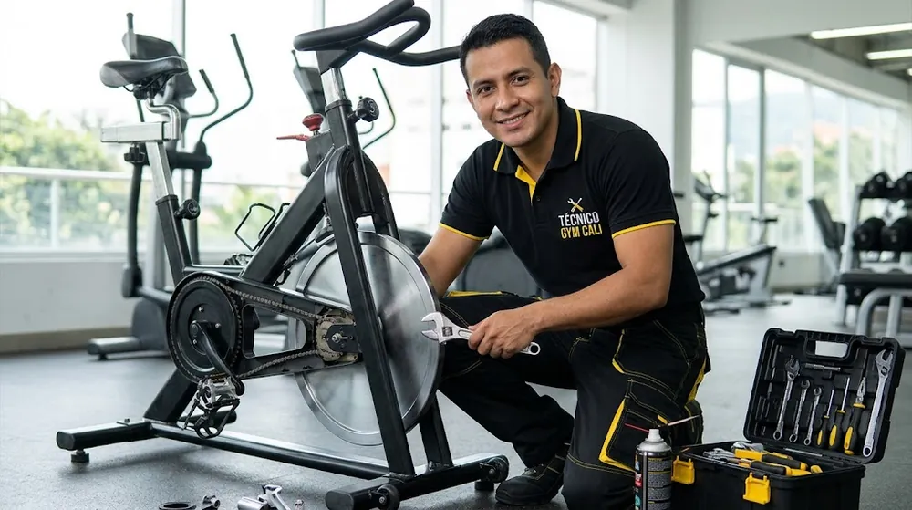

Imágenes ilustrativas.
Cómo trabajamos
- 1
Escríbenos
Cuéntanos por WhatsApp la marca, el modelo y qué le pasa. Una foto o un video ayuda.
- 2
Diagnóstico
Revisamos el equipo y te explicamos la falla antes de reparar.
- 3
Cotización clara
Te informamos el costo y las piezas necesarias antes de empezar.
- 4
Reparación y prueba
Reparamos y probamos el equipo con carga antes de dejarlo listo.
Guías para entender y revisar tu equipo
Explicaciones paso a paso de las fallas más comunes.
Para quién es el servicio
Equipos en casa
Caminadoras, bicicletas y elípticas de uso doméstico. Vamos hasta tu casa.
Gimnasios y estudios
Mantenimiento y reparación para que las máquinas no queden fuera de servicio.
Condominios y empresas
Zonas de ejercicio de conjuntos, hoteles y empresas en Cali.
Atendemos en toda Cali
Sur, norte, oeste, centro y oriente. Algunas de las zonas desde donde nos escriben:
Preguntas frecuentes
¿Reparan caminadoras a domicilio en Cali?
Sí. Atendemos en Cali. Escríbenos por WhatsApp con tu barrio, la marca y la falla y coordinamos la visita.
¿Qué equipos reparan?
Caminadoras, bicicletas de spinning y estáticas, elípticas y máquinas multifuncionales, de casa y de gimnasio.
¿Cuánto cuesta reparar una caminadora?
Depende de la falla y del equipo. Primero diagnosticamos y te informamos el costo antes de reparar.
¿Atienden gimnasios y condominios?
Sí. Podemos acordar visitas periódicas de mantenimiento preventivo.
¿Tu equipo está fallando?
Escríbenos por WhatsApp con la marca, el modelo y la falla. Te orientamos y coordinamos la revisión en Cali.
Escribir por WhatsApp